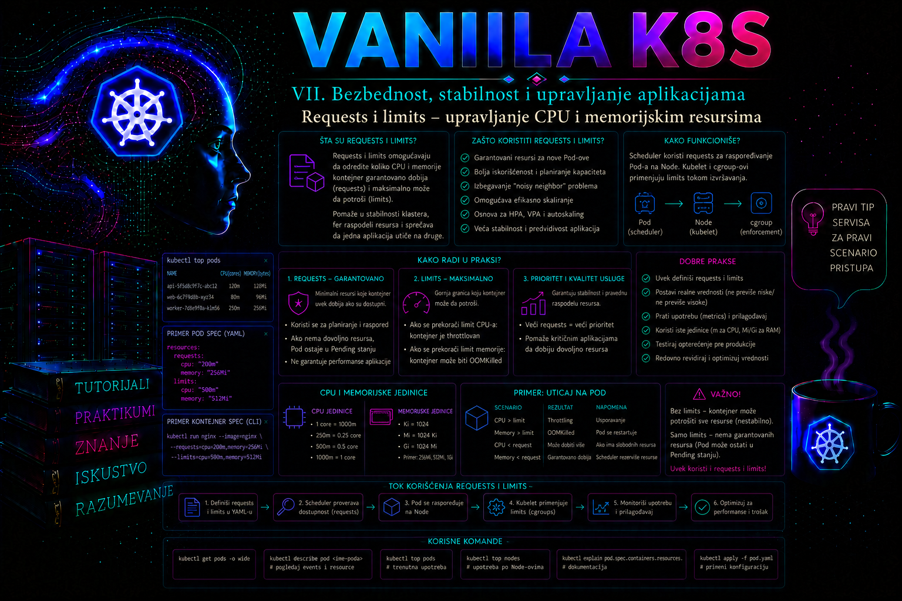

Vanilla Kubernetes

Kubernetes može da rasporedi veliki broj aplikacija na zajedničke worker čvorove, ali samo ako kontrolna ravan raspolaže dovoljno preciznim podacima o njihovim potrebama. Ti podaci se prvenstveno izražavaju kroz resource requests i resource limits. Request opisuje količinu resursa koja je potrebna kontejneru za planiranje i očekivani rad, dok limit određuje gornju granicu potrošnje koju izvršno okruženje treba da sprovede. Njihova uloga nije samo da spreče jednu aplikaciju da zauzme ceo čvor. Oni utiču na izbor čvora, gustinu smeštanja workload-a, QoS klasu poda, ponašanje tokom pritiska na memoriju, CPU throttling, kapacitet klastera, autoscaling i pouzdanost produkcionih servisa.
Dobro podešeni resursi nastaju merenjem, testiranjem i kontrolisanim promenama. Vrednosti se ne biraju prema veličini kontejnerske slike, broju korisnika bez dodatnog konteksta ili slobodnoj memoriji razvojnog računara. Administrator mora da razume profil aplikacije: osnovnu potrošnju u stanju mirovanja, potrošnju pri normalnom opterećenju, kratkotrajne vrhove, ponašanje garbage collectora, broj radnih procesa, veličinu keša, zavisnost od CPU vremena i posledice prekoračenja memorijskog limita.
Kako Kubernetes posmatra CPU i memoriju
Kubernetes CPU izražava kao količinu procesorskog vremena. Vrednost 1 predstavlja jedan logički CPU, virtuelni CPU ili jedno jezgro koje je operativnom sistemu vidljivo kao procesorska jedinica. Vrednost 500m predstavlja 500 millicpu, odnosno polovinu jednog CPU-a. Za CPU se ne koriste memorijske jedinice. Zapis 0.5 i 500m ima isto značenje, ali je millicpu zapis obično pregledniji i smanjuje rizik od grešaka.
Memorija se izražava u bajtovima ili binarnim i decimalnim prefiksima. Vrednosti Mi i Gi predstavljaju mebibajte i gibibajte, dok M i G predstavljaju decimalne megabajte i gigabajte. U praksi se za Kubernetes manifest najčešće koriste Mi i Gi. Posebno je opasan zapis 400m za memoriju: malo slovo m označava mili-jedinicu, a ne megabajt. Takva vrednost ne predstavlja 400 MB.
| Primer | Značenje | Administratorska napomena |
|---|---|---|
cpu: 250m |
Četvrtina jednog CPU-a | Pogodno za lakši servis, ali mora biti potvrđeno merenjem |
cpu: "2" |
Dva CPU-a | Scheduler mora pronaći čvor sa najmanje dva CPU-a raspoloživa prema requests vrednostima |
memory: 256Mi |
256 mebibajta | Uobičajen binarni zapis za memoriju |
memory: 2Gi |
Dva gibibajta | Limit mora uključiti realne vršne potrebe procesa i pomoćnih komponenti |
Requests – osnova za planiranje poda
Scheduler koristi requests vrednosti kada odlučuje na koji čvor može da rasporedi Pod. Za svaki kontejner u Podu posmatraju se traženi resursi, a efektivni zahtev poda obuhvata zbir zahteva njegovih aplikacionih i sidecar kontejnera, uz posebna pravila za init kontejnere. Scheduler ne proverava trenutnu potrošnju aplikacije u trenutku raspoređivanja. On poredi zahteve novog poda sa allocatable kapacitetom čvorova i requests vrednostima podova koji su već planirani na tim čvorovima.
Zbog toga čvor može imati mnogo slobodne memorije prema operativnom sistemu, a da novi Pod ipak ostane u stanju Pending. Requests vrednosti postojećih podova mogu već rezervisati raspoloživi kapacitet za potrebe schedulera. Obrnuto, čvor može biti preopterećen stvarnom potrošnjom iako zbir requests vrednosti izgleda nizak, jer su aplikacije dobile mogućnost da koriste više od deklarisanih zahteva.
Request nije unapred fizički izdvojen blok memorije koji nijedan drugi proces ne može da dodirne. To je prvenstveno deklaracija potrebna za planiranje, obračun kapaciteta i donošenje odluka pri pritisku na resurse. Kod CPU-a request utiče i na relativni udeo procesorskog vremena kada se više kontejnera nadmeće za CPU. Kontejner može koristiti više CPU-a od request vrednosti ako na čvoru postoji slobodan kapacitet i ako ga limit ne zaustavlja.
Prenizak request omogućava gušće raspoređivanje nego što je bezbedno. Posledice mogu biti latencija, nestabilan rad, node pressure i evikcije. Previsok request smanjuje iskorišćenost klastera, stvara lažan nedostatak kapaciteta i može izazvati nepotrebno dodavanje čvorova. Request zato treba da predstavlja realnu količinu resursa potrebnu da instanca aplikacije pouzdano izvršava očekivano opterećenje, a ne apsolutni minimum pri kojem se proces samo pokreće.
Limits – gornja granica potrošnje
Limit određuje maksimalnu količinu resursa koju kontejner može da koristi. CPU i memorijski limit nemaju isto operativno ponašanje. Kada kontejner dostigne CPU limit, Linux kontrolne grupe i mehanizam CPU kvote ograničavaju vreme procesora. Proces se obično ne prekida, ali može biti usporen. To se vidi kao CPU throttling: aplikacija ostaje pokrenuta, dok vreme odziva raste, obrada zahteva kasni ili se povećava red čekanja.
Kada proces pokuša da koristi memoriju iznad dozvoljenog limita, memorija se ne može „usporiti” na isti način. Kernel može prekinuti proces zbog prekoračenja cgroup memorijske granice. Kubernetes tada često prikazuje stanje OOMKilled, a kubelet može ponovo pokrenuti kontejner u skladu sa restart politikom poda. Ponavljanje ovog događaja može dovesti do stanja CrashLoopBackOff.
Memorijski limit mora obuhvatiti ukupnu memoriju procesa posmatranu iz perspektive kontrolne grupe, a ne samo heap koji prijavljuje aplikacioni runtime. U obzir mogu ući native alokacije, radni skup, memorijski mapirani fajlovi, pomoćne biblioteke, broj thread-ova, keširanje i drugi delovi procesa. Za Java, .NET, Node.js i slične runtime sisteme aplikaciona konfiguracija mora biti usklađena sa limitom. Na primer, Java heap podešen skoro do samog Kubernetes limita ne ostavlja dovoljno prostora za metaspace, thread stack, native biblioteke i ostale van-heap alokacije.
CPU limit nije obavezan u svakoj arhitekturi. Za latency-sensitive servise prenizak CPU limit može izazvati throttling upravo tokom vršnog opterećenja, iako čvor ima slobodan procesorski kapacitet. Neke organizacije zato zahtevaju precizne CPU requests vrednosti, ali CPU limite primenjuju selektivno. Takva odluka mora biti zasnovana na politici platforme, izolaciji zakupaca, profilu workload-a i merenju. Memorijski limit je obično važniji kao zaštita čvora od nekontrolisanog rasta procesa, ali ni on ne sme biti proizvoljno nizak.
Odnos requests i limits vrednosti
Request ne sme biti veći od odgovarajućeg limita. Ako je naveden samo limit, a request nije definisan i ne postoji druga politika koja ga određuje, Kubernetes može za request upotrebiti istu vrednost kao limit. Ako nije naveden ni request ni limit, kontejner može biti prihvaćen bez eksplicitnog ograničenja, osim kada namespace sadrži LimitRange, ResourceQuota ili admission politiku koja postavlja ili zahteva vrednosti.
resources:
requests:
cpu: 250m
memory: 256Mi
limits:
cpu: 750m
memory: 512MiOvaj primer govori scheduleru da instanca treba najmanje 250 millicpu i 256 Mi memorije za planiranje. Tokom rada može koristiti do 750 millicpu i do 512 Mi memorije. Dostizanje CPU limita proizvodi throttling, dok pokušaj prekoračenja memorijskog limita može završiti prekidom procesa.
Razlika između request i limit vrednosti predstavlja prostor za kratkotrajno povećanje potrošnje. Velika razlika nije automatski prednost. Ako stotine podova imaju male requests vrednosti i veoma visoke limite, zbir njihovih mogućih potrošnji može višestruko premašiti fizički kapacitet čvora. Takav overcommit može biti prihvatljiv za CPU, gde se procesorsko vreme deli, ali je mnogo rizičniji za memoriju, koja nije kompresibilan resurs u istom smislu.
QoS klase i ponašanje pri pritisku na resurse
Kubernetes svakom Podu dodeljuje jednu od tri QoS klase: Guaranteed, Burstable ili BestEffort. Klasa se određuje na osnovu requests i limits konfiguracije svih relevantnih kontejnera u Podu. QoS klasa utiče na način na koji se workload posmatra tokom pritiska na resurse, ali sama po sebi nije potpuna garancija da Pod nikada neće biti eviktovan ili prekinut.
- Guaranteed: u klasičnom container-level modelu svaki kontejner ima nenulte CPU i memorijske request i limit vrednosti, a za svaki resurs request je jednak limitu. Kada se koristi beta Pod-level resources model, Pod-level CPU i memory request moraju biti jednaki odgovarajućim limitima i imaju prvenstvo u određivanju QoS klase. Ova klasa daje najpredvidljiviji profil i najjaču zaštitu u odnosu na niže QoS klase, ali može smanjiti fleksibilnost i gustinu smeštanja.
- Burstable: najmanje jedan kontejner ima CPU ili memorijski request ili limit, ali uslovi za Guaranteed nisu ispunjeni. Ovo je česta klasa za poslovne aplikacije kojima treba garantovana osnova i prostor za vršnu potrošnju.
- BestEffort: nijedan kontejner nema definisane CPU ni memorijske requests ili limits vrednosti. Takvi podovi prvi su kandidati za uklanjanje pri nedostatku resursa i nisu odgovarajući za kritične produkcione servise.
Pri node pressure događajima kubelet ne odlučuje isključivo prema nazivu QoS klase. Važni su vrsta oskudnog resursa, prekoračenje request vrednosti, prioritet poda i relativna potrošnja. Administrator zato ne sme da tumači Guaranteed kao apsolutnu zaštitu. Pod i dalje može biti pogođen kvarom čvora, administrativnim drain postupkom, preemption događajem, prekoračenjem sopstvenog memorijskog limita ili drugim operativnim uzrokom.
LimitRange, ResourceQuota i politika namespace-a
Ručno unošenje resursa u svaki manifest nije dovoljna kontrola za višekorisnički klaster. LimitRange može definisati podrazumevane, minimalne i maksimalne vrednosti za kontejnere ili podove u namespace-u. Ako aplikacioni tim izostavi resurse, podrazumevane vrednosti mogu biti automatski primenjene. Ako tim zahteva vrednost izvan dozvoljenog opsega, API zahtev se odbija.
ResourceQuota ograničava zbir requests i limits vrednosti u celom namespace-u. Time se sprečava da jedan tim deklaracijama zauzme sav planerski kapacitet klastera. Quota ipak ne određuje kako treba dimenzionisati pojedinačnu aplikaciju. Ona postavlja granicu potrošnje namespace-a, dok se pravilno dimenzionisanje zasniva na merenjima i poslovnim SLO zahtevima.
LimitRange i ResourceQuota moraju se projektovati zajedno. Podrazumevane vrednosti koje LimitRange automatski dodaje troše kvotu. Loše usklađena politika može izazvati odbijanje novih podova iako tim nije eksplicitno uneo velike zahteve. Pre promene administrator proverava postojeće objekte, trenutnu potrošnju kvote, broj replika, autoscaling opseg i planirane deployment-e.
Uticaj na scheduling, autoscaling i kapacitet
Horizontal Pod Autoscaler najčešće poredi posmatranu CPU potrošnju sa CPU request vrednošću. Ako request nije realan, procenat iskorišćenja nije pouzdan. Kontejner koji koristi 200m CPU-a izgleda kao da je na 200% ako mu je request 100m, ali samo na 50% ako mu je request 400m. HPA zato ne popravlja loše dimenzionisanje; on ga može učiniti vidljivijim ili dodatno pojačati njegove posledice.
Cluster autoscaler i slični sistemi za proširenje kapaciteta reaguju na podove koji ne mogu da budu raspoređeni prema requests vrednostima i ostalim scheduling uslovima. Previsoki requests mogu pokrenuti nepotrebno skaliranje infrastrukture. Preniski requests mogu sprečiti blagovremeno dodavanje čvorova, jer scheduler formalno vidi dovoljno kapaciteta iako su postojeći čvorovi operativno preopterećeni.
Za pouzdan obračun kapaciteta administrator prati najmanje zbir requests vrednosti, zbir limits vrednosti, stvarnu potrošnju, allocatable resurse, broj pending podova, throttling, OOM događaje i trend rasta. Sam prikaz kubectl top nije dovoljan za dugoročno dimenzionisanje jer pokazuje trenutni ili kratkoročni uzorak, a ne percentile i sezonske vrhove.
Local ephemeral storage – prolazni prostor koji može ugroziti čvor
Local ephemeral storage je lokalni, prolazni prostor na worker čvoru koji Kubernetes može da prati, rezerviše i ograničava resursom ephemeral-storage. Podaci nisu trajni: vezani su za konkretan Pod i čvor i mogu nestati kada se Pod ukloni ili ponovo kreira na drugom čvoru. Ovaj resurs ne treba mešati sa generičkim ephemeral volume tipovima kao što su CSI ephemeral volume ili generic ephemeral volume; oni mogu imati drugačiji storage backend i obračun. Ovde je reč o lokalnom prostoru kojim upravljaju kubelet i container runtime.
U obračun potrošnje poda ulaze zapisivi slojevi kontejnera, logovi kontejnera na nivou čvora i disk-backed emptyDir volumeni. emptyDir sa medium: Memory koristi tmpfs: njegova potrošnja obračunava se kao memorija kontejnera koji je upisuje, a ne kao local ephemeral storage. Image slojevi koji se dele između kontejnera predstavljaju node-level potrošnju i predmet su image garbage collection-a, ali nisu deo individualne ephemeral-storage potrošnje kontejnera na isti način kao njegov writable layer i logovi.
| Izvor potrošnje | Gde se obračunava | Tipičan rizik | Kontrola |
|---|---|---|---|
| Writable container layer | Po kontejneru i Podu | Privremeni fajlovi, cache ili core dump nekontrolisano rastu | requests.ephemeral-storage, limits.ephemeral-storage i aplikaciona politika čišćenja |
| Container logs | Po kontejneru i na node filesystem-u | Log storm popunjava disk ili inode tabelu | Kubelet log rotacija, centralno prikupljanje i alarmi |
Disk-backed emptyDir |
Na nivou poda; potrošnja se deli između kontejnera koji ga montiraju | Scratch podaci rastu bez granice | sizeLimit i Pod/container ephemeral-storage limit |
emptyDir.medium: Memory |
Kao memorijska potrošnja kontejnera koji upisuje | OOM kontejnera ili MemoryPressure | sizeLimit plus odgovarajući memorijski limit |
| Neiskorišćene slike | Na nivou čvora | imagefs ili nodefs ostaje bez prostora |
Kubelet image garbage collection i eviction pragovi |
Request za ephemeral-storage učestvuje u scheduling odluci: scheduler sabira zahteve kontejnera i bira čvor čiji allocatable lokalni storage može da primi Pod. Limit je zbirno ograničenje potrošnje lokalnog prostora. Ako zbir writable layer-a i logova kontejnera pređe njegov container limit, Pod postaje kandidat za evikciju. Ako ukupna potrošnja Pod-a — container slojevi i logovi zajedno sa disk-backed emptyDir volumenima — pređe dozvoljeni Pod limit, kubelet označava Pod za evikciju. Ovo nije analogno OOM restartu jednog procesa: posledica je uklanjanje celog Poda sa čvora.
resources:
requests:
cpu: 250m
memory: 256Mi
ephemeral-storage: 256Mi
limits:
cpu: 750m
memory: 512Mi
ephemeral-storage: 1Gi
volumeMounts:
- name: scratch
mountPath: /work
volumes:
- name: scratch
emptyDir:
sizeLimit: 700Mi
emptyDir.sizeLimit i limits.ephemeral-storage rešavaju povezane, ali različite probleme. Prvi ograničava konkretan volume; drugi obuhvata i druge lokalne zapise kontejnera i poda. sizeLimit ne garantuje da će svaki bajt biti dostupan: isti filesystem dele drugi podovi, logovi i sistemske komponente, pa node-pressure eviction može nastupiti pre dostizanja te vrednosti. Obrnuto, samo container limit bez sizeLimit ne opisuje jasno budžet pojedinačnog deljenog emptyDir volumena.
Jedinice zahtevaju istu disciplinu kao memorija. Zapis ephemeral-storage: 400m znači 0,4 bajta, a ne 400 MB. Za praktične vrednosti koriste se Mi i Gi. Pogrešna jedinica može proći sintaksnu validaciju i proizvesti izuzetno mali limit, pa manifest treba proveriti server-side dry-run postupkom i čitanjem primljenog PodSpec-a.
Kako kubelet meri lokalni storage i gde su granice tačnosti
Kubelet može periodično skenirati direktorijume ili, na podržanim Linux filesystem-ima, koristiti project quota evidenciju. Periodično skeniranje može kasniti za stvarnom potrošnjom i ne vidi pouzdano prostor koji zauzima obrisan fajl dok ga proces još drži otvorenim. Project quota poboljšava praćenje takvih slučajeva, ali zahteva odgovarajući filesystem i konfiguraciju; quota se koristi za merenje, ne kao samostalni mehanizam koji direktno zaustavlja upis.
Raspored filesystem-a na čvoru neposredno utiče na vidljivost. Kubernetes podržava prepoznate konfiguracije sa jednim filesystem-om za kubelet podatke ili sa odvojenim filesystem-ima za slike i zapisive slojeve. Ako administrator proizvoljno montira zaseban disk na putanju koja nije deo podržanog kubelet layout-a, kubelet može prestati pravilno da obračunava local ephemeral storage. Zato se node storage projektuje kroz podržanu konfiguraciju distribucije i runtime-a, a zatim proverava preko Node capacity/allocatable podataka i metrika.
Za pritisak na disk kubelet prati raspoložive bajtove i inode na signalima kao što su nodefs.available, nodefs.inodesFree, imagefs.available, imagefs.inodesFree, a u podržanim split-image konfiguracijama i containerfs signale. Tačan skup zavisi od layout-a, container runtime-a, Kubernetes verzije i feature gate stanja. Kada prag bude pređen, Node dobija stanje DiskPressure, scheduler izbegava dalje raspoređivanje preko odgovarajućeg taint-a, a kubelet prvo pokušava node-level reclaim — na primer brisanje mrtvih podova/kontejnera i neiskorišćenih slika — pre evikcije aktivnih korisničkih podova.
Evikcija nije isto što i OOM, preemption ili API eviction
Node-pressure eviction je lokalna zaštitna odluka kubeleta. Ona nije isto što i scheduler preemption, kojim se oslobađa mesto za Pod višeg prioriteta, niti isto što i API-initiated eviction korišćen tokom kubectl drain postupka. Kubelet pri node pressure-u ne garantuje poštovanje PodDisruptionBudget-a. Kod hard eviction praga Pod može biti zaustavljen bez uobičajenog grace perioda; kod soft pragova ponašanje zavisi od eviction-soft-grace-period i eviction-max-pod-grace-period konfiguracije.
Redosled kandidata ne treba svesti na formulu „BestEffort pa Burstable pa Guaranteed”. Kubelet za oskudni resurs razmatra da li potrošnja Poda premašuje njegov request, Pod Priority i relativno prekoračenje request-a. QoS je koristan indikator, naročito za memoriju, ali ephemeral-storage ne ulazi u određivanje QoS klase: Pod sa jednakim CPU i memory request/limit vrednostima može biti Guaranteed i ipak imati loše dimenzionisan storage ili biti eviktovan zbog DiskPressure. Guaranteed Pod može biti uklonjen i kada nijedan pogodniji kandidat ne može da oslobodi dovoljno resursa.
| Simptom | Neposredni uzrok | Dokaz | Trajna korekcija |
|---|---|---|---|
Pending i Insufficient ephemeral-storage |
Nijedan dozvoljeni čvor nema dovoljan nealokirani request kapacitet | Scheduler Event u kubectl describe pod |
Ispraviti request na osnovu merenja ili dodati/oslobađati podržani kapacitet |
Evicted zbog prekoračenja local storage limita |
Pod ili kontejner premašio sopstveni budžet | Pod status/message, Event i kubelet log | Zaustaviti nekontrolisan rast, uvesti rotaciju/čišćenje i tek zatim podesiti limit |
DiskPressure=True i node-pressure eviction |
Node filesystem prešao eviction prag za bajtove ili inode | Node condition, taint, events, filesystem i kubelet metrike/log | Ukloniti uzrok, povećati/rezervisati kapacitet i ispraviti retention, image i log politiku |
OOMKilled |
Proces je pogodio cgroup memory limit | lastState.terminated.reason i container/node evidencija |
Ispraviti memory leak/runtime profil ili validirano povećati memorijski budžet |
Napredne i verzijski zavisne mogućnosti
Savremene Kubernetes verzije podržavaju dodatne mogućnosti upravljanja resursima, ali njihovu dostupnost treba proveriti prema verziji API servera, kubeleta, feature gate podešavanjima i podršci distribucije. Pod-level resources su u Kubernetes v1.34 beta i podrazumevano uključena funkcionalnost preko feature gate-a PodLevelResources. Omogućavaju deklarisanje CPU-a, memorije i hugepages resursa na nivou poda; ne obuhvataju ephemeral-storage i nisu podržani za Windows podove. Kada postoje i Pod-level i container-level vrednosti, važe posebna pravila prvenstva i raspodele, pa podršku admission politika, autoscalera i resource manager-a treba proveriti pre usvajanja.
In-place Pod resize omogućava promenu određenih CPU i memorijskih vrednosti bez obaveznog kreiranja potpuno novog poda, ali ponašanje zavisi od verzije, feature gate-ova i resizePolicy podešavanja kontejnera. U aktuelnoj upstream dokumentaciji za Kubernetes v1.36 container-level in-place resize i Pod-level resize opisani su kao beta i podrazumevano uključeni uz odgovarajuće feature gate-ove; Pod-level resize zahteva dodatne uslove, a kubectl --subresource=resize zahteva klijent v1.32 ili noviji. Za neke container-level promene potreban je restart kontejnera, a za druge nije. Ovaj mehanizam ne menja ephemeral-storage. Pre produkcione upotrebe administrator mora potvrditi podršku konkretne distribucije, runtime-a, operativnog sistema, admission politika, autoscalera i monitoring sistema. Promena Deployment šablona sa kontrolisanim rollout-om ostaje najšire primenljiv i najlakše proverljiv postupak.
Na Linux worker čvorovima sprovođenje ograničenja oslanja se na cgroups i container runtime. cgroup v2 predstavlja savremenu osnovu za kontrolu i evidenciju resursa. CPU Manager sa static politikom može određenim Guaranteed kontejnerima sa celobrojnim CPU zahtevima dodeliti ekskluzivne procesore, što je važno za workload-e osetljive na latenciju. To je posebna node-level arhitektonska odluka i ne treba je uključivati samo promenom aplikacionog manifesta bez koordinacije sa platformskim timom.
Kako se biraju početne vrednosti
Početne vrednosti treba izvesti iz testa koji dovoljno liči na produkciju. Prvo se meri potrošnja tokom mirovanja, zagrevanja aplikacije, normalnog opterećenja, planiranog vrha i kontrolisanog preopterećenja. Za memoriju se posmatra stabilni radni skup, rast tokom vremena, ponašanje keša i garbage collectora, kao i vrednost neposredno pre završetka procesa. Za CPU se posmatraju proseci, visoki percentili, throttling i odnos potrošnje prema broju obrađenih zahteva.
Razumna početna strategija je da request pokriva održivu potrošnju pri normalnom opterećenju sa bezbednosnom rezervom, dok limit pokriva potvrđene vrhove bez skrivanja curenja memorije ili neograničenog CPU rada. Tačan procenat rezerve nije univerzalan. Kritični servis sa strogim SLO zahtevom, batch posao, razvojni alat i pomoćni sidecar nemaju isti profil niti isti rizik.
Promena se radi postepeno. Veliko smanjenje memorijskog limita može momentalno izazvati OOM događaje. Veliko smanjenje CPU limita može proizvesti latenciju bez očiglednog pada poda. Veliko povećanje request vrednosti može blokirati rollout jer nove i stare replike tokom rolling update-a privremeno postoje istovremeno. Pre promene treba proveriti maxSurge, maxUnavailable, slobodan allocatable kapacitet i PodDisruptionBudget.
Integrisani praktikum – kontrolisano dimenzionisanje poslovnog API servisa
Poslovni i tehnički kontekst. Tim održava interni servis inventory-api koji zaposlenima omogućava čitanje podataka o IT opremi. Aplikacija radi kao Deployment sa dve replike u namespace-u inventory-prod. Platforma je Vanilla Kubernetes klaster sa Linux worker čvorovima, Metrics Server komponentom i standardnim RBAC-om. Cilj promene je da svaka replika dobije merljive CPU, memorijske i local ephemeral storage requests i limits vrednosti, da namespace bude zaštićen LimitRange i ResourceQuota objektima i da se potvrdi ponašanje pri CPU, memorijskom i storage opterećenju.
Referentno okruženje. Koriste se kontekst vk8s-admin, namespace inventory-prod, Deployment inventory-api, Service inventory-api i lokalni direktorijum ~/labs/lesson-23. Primer koristi sliku registry.k8s.io/e2e-test-images/resource-consumer:1.13 kao demonstracioni servis za kontrolisano CPU i memorijsko opterećenje, a organizaciono odobrenu BusyBox sliku za izolovan storage test. Pre početka treba potvrditi da su konkretni tagovi dostupni za arhitekturu čvorova; u produkciji se koriste skenirane i pinovane slike iz internog registra.
Preduslovi i prava pristupa. Administrator mora imati pravo čitanja Node, Pod, Event i metrics podataka, kao i pravo kreiranja i izmene Namespace, Deployment, Service, LimitRange i ResourceQuota objekata. Za produkcionu promenu preporučuje se zasebna servisna ili korisnička uloga sa najmanjim potrebnim skupom privilegija. Nije potrebno pristupati tajnama niti koristiti privilegovane kontejnere.
-
Priprema direktorijuma i potvrda konteksta.
Pre kreiranja objekata administrator mora potvrditi da komande neće biti izvršene nad pogrešnim klasterom. Direktorijum služi za čuvanje manifesta, izlaza provera i rollback kopije.
Validacija: komandamkdir -p ~/labs/lesson-23 cd ~/labs/lesson-23 kubectl config use-context vk8s-admin kubectl config current-context kubectl cluster-infokubectl config current-contextmora vratitivk8s-admin, akubectl cluster-infomora uspešno prikazati adresu control plane-a. Ako kontekst nije očekivan, postupak se odmah prekida. -
Početna provera kapaciteta i podrške za metrike.
Pre definisanja requests vrednosti proverava se allocatable kapacitet worker čvorova i dostupnost Metrics API-ja.
Validacija: svi planirani worker čvorovi treba da budu u stanjukubectl get nodes kubectl describe nodes | grep -A 8 "Allocatable:" kubectl get nodes \ -o custom-columns='NAME:.metadata.name,EPHEMERAL_CAPACITY:.status.capacity.ephemeral-storage,EPHEMERAL_ALLOCATABLE:.status.allocatable.ephemeral-storage,DISK_PRESSURE:.status.conditions[?(@.type=="DiskPressure")].status' kubectl top nodesReady,DiskPressuretreba da budeFalse, akubectl top nodestreba da vrati CPU i memorijsku potrošnju. Metrics API po pravilu ne prikazuje ephemeral storage; za njega se koriste Node status, kubelet/runtime metrike i monitoring filesystem-a. GreškaMetrics API not availableznači da Metrics Server nije dostupan ili još nema podatke; resursi se mogu primeniti, ali CPU i memorijski deo praktikuma ne treba nastaviti bez merenja. -
Kreiranje namespace-a.
Namespace odvaja resurse laboratorijskog poslovnog servisa i omogućava primenu politike na jasno definisan opseg.
Validacija: namespace mora imati statuscat > 01-namespace.yaml <<'EOF' apiVersion: v1 kind: Namespace metadata: name: inventory-prod labels: environment: production application-domain: inventory EOF kubectl apply -f 01-namespace.yaml kubectl get namespace inventory-prod --show-labelsActivei obe deklarisane oznake. -
Primena LimitRange politike.
Politika postavlja podrazumevane vrednosti za kontejnere koji ih izostave i sprečava ekstremno male ili velike deklaracije. Podrazumevane vrednosti nisu zamena za eksplicitnu konfiguraciju Deployment-a, već zaštitna mreža.
Validacija: izlaz mora prikazati minimum, maksimum, default request i default limit vrednosti. Administrator dokumentuje da će svaki novokreirani kontejner bez eksplicitnih resursa dobiti podrazumevane vrednosti.cat > 02-limit-range.yaml <<'EOF' apiVersion: v1 kind: LimitRange metadata: name: inventory-container-limits namespace: inventory-prod spec: limits: - type: Container min: cpu: 50m memory: 64Mi max: cpu: "2" memory: 2Gi defaultRequest: cpu: 100m memory: 128Mi ephemeral-storage: 128Mi default: cpu: 500m memory: 512Mi ephemeral-storage: 512Mi EOF kubectl apply -f 02-limit-range.yaml kubectl describe limitrange inventory-container-limits -n inventory-prod -
Primena namespace kvote.
Quota ograničava zbir resursa svih podova u namespace-u. Vrednosti ostavljaju prostor za dve radne replike, kontrolisani rolling update i jedan kraći testni Pod, ali ne dozvoljavaju nekontrolisano širenje.
Validacija: poljecat > 03-resource-quota.yaml <<'EOF' apiVersion: v1 kind: ResourceQuota metadata: name: inventory-compute-quota namespace: inventory-prod spec: hard: requests.cpu: "2" requests.memory: 2Gi limits.cpu: "4" limits.memory: 4Gi requests.ephemeral-storage: 4Gi limits.ephemeral-storage: 8Gi pods: "10" EOF kubectl apply -f 03-resource-quota.yaml kubectl describe resourcequota inventory-compute-quota -n inventory-prodHardmora prikazati zadate granice, a početneUsedvrednosti treba da budu nula ili da odražavaju samo postojeće objekte ako namespace nije bio prazan. -
Kreiranje servisa sa eksplicitnim requests i limits vrednostima.
Svaka replika traži 200m CPU-a, 256Mi memorije i 256Mi local ephemeral storage-a, a može koristiti najviše 800m CPU-a, 512Mi memorije i 1Gi ephemeral storage-a. Readiness i liveness provere koriste ugrađenu HTTP putanju demonstracione aplikacije.
Validacija: rollout mora biti uspešan, a dve replike moraju biti dostupne. Ako Pod ostane u stanjucat > 04-inventory-api.yaml <<'EOF' apiVersion: apps/v1 kind: Deployment metadata: name: inventory-api namespace: inventory-prod labels: app: inventory-api spec: replicas: 2 strategy: type: RollingUpdate rollingUpdate: maxSurge: 1 maxUnavailable: 0 selector: matchLabels: app: inventory-api template: metadata: labels: app: inventory-api spec: containers: - name: inventory-api image: registry.k8s.io/e2e-test-images/resource-consumer:1.13 args: - -port - "8080" ports: - name: http containerPort: 8080 resources: requests: cpu: 200m memory: 256Mi ephemeral-storage: 256Mi limits: cpu: 800m memory: 512Mi ephemeral-storage: 1Gi readinessProbe: httpGet: path: / port: http initialDelaySeconds: 3 periodSeconds: 5 livenessProbe: httpGet: path: / port: http initialDelaySeconds: 10 periodSeconds: 10 --- apiVersion: v1 kind: Service metadata: name: inventory-api namespace: inventory-prod spec: selector: app: inventory-api ports: - name: http port: 80 targetPort: http EOF kubectl apply -f 04-inventory-api.yaml kubectl rollout status deployment/inventory-api -n inventory-prod --timeout=180sPending, proveravaju se events podaci pre bilo kakvog povećanja kapaciteta.
Očekivana QoS klasa jekubectl get deployment,pods,service -n inventory-prod -o wide kubectl get events -n inventory-prod --sort-by=.lastTimestamp kubectl get pods -n inventory-prod \ -l app=inventory-api \ -o custom-columns='NAME:.metadata.name,QOS:.status.qosClass,CPU_REQ:.spec.containers[0].resources.requests.cpu,MEM_REQ:.spec.containers[0].resources.requests.memory,EPH_REQ:.spec.containers[0].resources.requests.ephemeral-storage,CPU_LIMIT:.spec.containers[0].resources.limits.cpu,MEM_LIMIT:.spec.containers[0].resources.limits.memory,EPH_LIMIT:.spec.containers[0].resources.limits.ephemeral-storage'Burstable, jer requests i limits vrednosti nisu jednake. -
Provera potrošnje, kvote i opisa poda.
Početno stanje predstavlja osnovu za poređenje sa opterećenjem. Jedan trenutni uzorak nije dovoljan za produkciono dimenzionisanje, ali potvrđuje da su metrike povezane sa odgovarajućim podovima.
Validacija: pre kreiranja klijenta quota treba da evidentira 400m CPU requests, 512Mi memorijskih requests, 512Mi ephemeral-storage requests, 1600m CPU limita, 1Gi memorijskih limita i 2Gi ephemeral-storage limita za dve replike. Opis poda mora prikazati iste vrednosti i uspešne probe bez restartovanja.kubectl top pods -n inventory-prod --containers kubectl describe resourcequota inventory-compute-quota -n inventory-prod POD_NAME="$(kubectl get pod -n inventory-prod -l app=inventory-api -o jsonpath='{.items[0].metadata.name}')" kubectl describe pod "$POD_NAME" -n inventory-prod -
Funkcionalna provera servisa.
Privremeni Pod koristi se kao klijent unutar klastera. On nema eksplicitne resurse, pa LimitRange treba automatski da mu dodeli podrazumevane vrednosti.
Validacija: HTTP zahtev mora biti uspešan. Zatim se potvrđuje da je LimitRange dodao podrazumevane vrednosti klijentskom kontejneru.kubectl run inventory-client \ -n inventory-prod \ --image=curlimages/curl:8.12.1 \ --restart=Never \ --command -- sleep 600 kubectl wait \ --for=condition=Ready \ pod/inventory-client \ -n inventory-prod \ --timeout=120s kubectl exec -n inventory-prod inventory-client -- \ curl -fsS http://inventory-api/kubectl get pod inventory-client -n inventory-prod \ -o jsonpath='{.spec.containers[0].resources}{"\n"}' kubectl describe resourcequota inventory-compute-quota -n inventory-prod -
Kontrolisani CPU test.
Demonstracioni endpoint dobija zahtev da generiše CPU opterećenje. Test se pokreće samo kratko i u ovom izolovanom namespace-u. U stvarnoj produkciji opterećenje se generiše odobrenim load-test alatom u dogovorenom terminu.
Validacija: jedna ili obe replike mogu pokazati povećanu CPU potrošnju, ali ne bi trebalo da budu terminirane. CPU potrošnja pojedinačnog kontejnera treba da ostane u okviru limita od 800m. Za pouzdanu analizu throttling-a u produkciji koriste se container runtime ili Prometheus metrike kao što su periodi i sekunde CPU throttling-a.kubectl exec -n inventory-prod inventory-client -- \ curl -fsS \ "http://inventory-api/ConsumeCPU?millicores=700&durationSec=60" sleep 10 kubectl top pods -n inventory-prod --containers -
Kontrolisani memorijski test i posmatranje rizika.
Prvo se zahteva 300 Mi memorije, što bi trebalo da ostane ispod limita od 512 Mi. Posle testa proveravaju se potrošnja, restart count i events podaci.
Validacija: servis treba da ostane dostupan, probe treba da prolaze, a restart count ne treba da se poveća. Stvarna evidentirana memorija može odstupati od tražene količine zbog postojeće potrošnje procesa i načina obračuna radnog skupa.kubectl exec -n inventory-prod inventory-client -- \ curl -fsS \ "http://inventory-api/ConsumeMem?megabytes=300&durationSec=60" sleep 10 kubectl top pods -n inventory-prod --containers kubectl get pods -n inventory-prod \ -l app=inventory-api \ -o custom-columns='NAME:.metadata.name,READY:.status.containerStatuses[0].ready,RESTARTS:.status.containerStatuses[0].restartCount,LAST_REASON:.status.containerStatuses[0].lastState.terminated.reason' -
Kontrolisani local ephemeral storage test.
Testni Pod dobija request od 64Mi, limit od 160Mi i disk-backed
emptyDirsasizeLimit: 128Mi. Najpre se upisuje 64Mi i potvrđuje normalan rad. Zatim se, isključivo u laboratoriji, pokušava upis iznad storage budžeta. Kubelet obračun radi periodično, pa evikcija ne mora biti trenutna.
Očekivani rezultat: fajl veličine približno 64Mi postoji, Pod ostajecat > 05-ephemeral-storage-test.yaml <<'EOF' apiVersion: v1 kind: Pod metadata: name: ephemeral-storage-test namespace: inventory-prod spec: restartPolicy: Never containers: - name: writer image: busybox:1.36.1 command: ["sh", "-c", "sleep 3600"] resources: requests: cpu: 10m memory: 16Mi ephemeral-storage: 64Mi limits: cpu: 100m memory: 64Mi ephemeral-storage: 160Mi volumeMounts: - name: scratch mountPath: /scratch volumes: - name: scratch emptyDir: sizeLimit: 128Mi EOF kubectl apply --server-side --dry-run=server \ -f 05-ephemeral-storage-test.yaml -o yaml > /dev/null kubectl apply -f 05-ephemeral-storage-test.yaml kubectl wait --for=condition=Ready pod/ephemeral-storage-test \ -n inventory-prod --timeout=120s kubectl exec -n inventory-prod ephemeral-storage-test -- \ dd if=/dev/zero of=/scratch/sample.bin bs=1M count=64 kubectl exec -n inventory-prod ephemeral-storage-test -- \ du -h /scratch/sample.bin kubectl get pod ephemeral-storage-test -n inventory-prod \ -o jsonpath='{.spec.containers[0].resources}{"\n"}'Running, a primljeni PodSpec prikazuje 64Mi request i 160Mi limit. Komandakubectl topnije dokaz storage potrošnje.Sledeći upis može dovesti do greške na filesystem-u ili do naknadne evikcije, u zavisnosti od filesystem-a, načina merenja i vremena kubelet skeniranja. Ne izvršava se na deljenom produkcionom čvoru.
Posmatranje sakubectl exec -n inventory-prod ephemeral-storage-test -- \ dd if=/dev/zero of=/scratch/overflow.bin bs=1M count=128 || true kubectl get pod ephemeral-storage-test -n inventory-prod -w-wprekida se saCtrl+Cčim se vidi rezultat ili po isteku dogovorenog vremena. Dokazi se zatim prikupljaju read-only komandama:
Tumačenje i recovery: poruka o prekoračenju local ephemeral storage limita ukazuje na Pod-level budžet;kubectl get pod ephemeral-storage-test -n inventory-prod -o wide kubectl describe pod ephemeral-storage-test -n inventory-prod kubectl get events -n inventory-prod \ --field-selector involvedObject.name=ephemeral-storage-test \ --sort-by=.lastTimestamp kubectl get nodes \ -o custom-columns='NAME:.metadata.name,DISK_PRESSURE:.status.conditions[?(@.type=="DiskPressure")].status'DiskPressure=Trueukazuje na node-level problem. Testni Pod nema poslovne podatke i bezbedno se vraća brisanjem i ponovnim kreiranjem nakon uklanjanja fajlova ili korekcije manifesta. U produkciji se prvo zaustavlja izvor rasta logova/cache-a, čuva incidentni dokaz i proverava slobodan prostor; ne brišu se nasumično direktorijumi ispod kubelet ili runtime putanja. -
Negativni test – odbijanje resursa izvan politike.
Kreira se manifest sa memorijskim limitom većim od maksimuma dozvoljenog LimitRange objektom. Očekuje se odbijanje na API nivou, bez pokretanja poda.
Očekivani rezultat: API server treba da odbije objekat jer je memorijski limit od 3Gi veći od maksimalnih 2Gi. Proverava se da Pod nije nastao.cat > 06-invalid-pod.yaml <<'EOF' apiVersion: v1 kind: Pod metadata: name: invalid-memory-request namespace: inventory-prod spec: containers: - name: test image: registry.k8s.io/pause:3.10 resources: requests: cpu: 100m memory: 128Mi limits: cpu: 200m memory: 3Gi EOF kubectl apply -f 06-invalid-pod.yaml
Očekuje se porukakubectl get pod invalid-memory-request -n inventory-prodNotFound. Ako je Pod ipak kreiran, LimitRange nije primenjen u očekivanom namespace-u ili manifest ne koristi očekivani kontekst. -
Negativni test – prekoračenje memorijskog limita.
Ovaj korak namerno može izazvati prekid kontejnera i koristi se samo u laboratoriji ili unapred odobrenom testnom okruženju. Bezbednija produkciona alternativa je load test na posebnom staging klasteru.
Validacija: pogođeni kontejner može biti završen sa razlogomkubectl exec -n inventory-prod inventory-client -- \ curl -fsS \ "http://inventory-api/ConsumeMem?megabytes=700&durationSec=120" || true sleep 15 kubectl get pods -n inventory-prod \ -l app=inventory-api \ -o custom-columns='NAME:.metadata.name,READY:.status.containerStatuses[0].ready,RESTARTS:.status.containerStatuses[0].restartCount,LAST_REASON:.status.containerStatuses[0].lastState.terminated.reason' kubectl get events -n inventory-prod --sort-by=.lastTimestamp | tail -n 20OOMKilled, nakon čega ga kubelet ponovo pokreće. Druga replika treba da održava dostupnost servisa. Ako obe replike istovremeno izgube readiness, servis nema dovoljnu otpornost za ovakav test ili zahtevi nisu ravnomerno raspoređeni. -
Provera logova i razlikovanje simptoma.
Aplikacioni logovi mogu pokazati poslednji uspešan zahtev, ali OOM prekid često ne ostavlja urednu aplikacionu poruku jer proces prekida kernel. Zato se kombinuju prethodni log, status kontejnera, events podaci i node-level evidencija.
Tumačenje:FAILED_POD="$(kubectl get pod -n inventory-prod -l app=inventory-api \ --sort-by=.status.containerStatuses[0].restartCount \ -o jsonpath='{.items[-1:].metadata.name}')" kubectl logs -n inventory-prod "$FAILED_POD" --previous || true kubectl describe pod -n inventory-prod "$FAILED_POD" kubectl get events -n inventory-prod \ --field-selector involvedObject.name="$FAILED_POD" \ --sort-by=.lastTimestampOOMKilledukazuje na prekoračenje memorijske granice kontejnera.Evictedsa porukom o memory pressure-u ukazuje na pritisak na nivou čvora.Pendingsa porukomInsufficient memoryznači da scheduler nije našao dovoljan nealokirani request kapacitet. Rast latencije bez restarta, uz throttling metrike, ukazuje na CPU ograničenje. -
Rollback konfiguracije.
Ako je promena resursa izvršena na postojećem Deployment-u, najbezbedniji povratak je vraćanje prethodno odobrenog manifesta iz sistema kontrole verzija ili korišćenje Deployment revision istorije. U ovom praktikumu početno stanje nastalo je primenom fajla
04-inventory-api.yaml, pa se resursi mogu korigovati u tom fajlu i ponovo primeniti.
Validacija: rollout mora biti završen, željeni broj replika dostupan, a requests i limits vrednosti moraju odgovarati izabranoj prethodnoj reviziji. Ako je Deployment kreiran samo jednom i nema korisne prethodne revizije, koristi se odobrena kopija manifesta, a ne nasumično ručno menjanje aktivnih podova.kubectl rollout history deployment/inventory-api -n inventory-prod kubectl rollout undo deployment/inventory-api -n inventory-prod kubectl rollout status deployment/inventory-api -n inventory-prod --timeout=180s -
Cleanup laboratorijskih resursa.
Brisanje namespace-a uklanja sve objekte u njemu i predstavlja destruktivnu operaciju. Pre komande mora se potvrditi da namespace ne sadrži druge aplikacije ili podatke.
Validacija:kubectl get all,limitrange,resourcequota -n inventory-prod kubectl delete namespace inventory-prod kubectl wait \ --for=delete \ namespace/inventory-prod \ --timeout=180skubectl get namespace inventory-prodtreba da vratiNotFound. U stvarnom produkcionom scenariju ne briše se namespace; uklanjaju se samo privremeni testni objekti i vraća odobrena konfiguracija.
Kriterijumi prihvatanja praktikuma
- Dve replike Deployment-a postaju
Available, prolaze readiness proveru i dostupne su preko Service objekta. - Svaka replika ima request od 200m CPU-a i 256Mi memorije, kao i limit od 800m CPU-a i 512Mi memorije.
- Svaka replika ima request od 256Mi i limit od 1Gi za
ephemeral-storage, a namespace kvota evidentira zbir deklarisanih vrednosti. - Podovi aplikacije imaju očekivanu QoS klasu
Burstable. - ResourceQuota tačno evidentira zbir resursa aktivnih podova i odbija potrošnju iznad namespace granice.
- LimitRange automatski dodaje podrazumevane resurse testnom klijentu i odbija kontejner sa limitom iznad dozvoljenog maksimuma.
- CPU test ne prekida kontejner, dok se memorijski negativni test razlikuje kao
OOMKilled, a ne kao scheduling ili node-pressure problem. - Storage test potvrđuje primljene request/limit vrednosti i razlikuje prekoračenje Pod limita od node-level
DiskPressuredogađaja. - Administrator može da pronađe prethodne logove, Pod status i događaje potrebne za objašnjenje restarta.
- Rollback vraća poznatu Deployment reviziju i završava se bez nedostupnih replika.
Administratorske prakse
Praćenje odnosa stvarne potrošnje i requests vrednosti. Za svaki produkcioni workload prate se CPU i memorijski percentili po kontejneru, a ne samo trenutni maksimum. Operativna provera može početi komandama kubectl top pods --containers i kubectl describe pod, dok se za period od najmanje nekoliko dana koriste Prometheus, OpenTelemetry kompatibilan sistem ili druga odobrena monitoring platforma. Pregled se radi posle svakog izdanja, promene opterećenja i najmanje mesečno za stabilne servise. Dugotrajan CPU iznad request vrednosti, memorija koja se približava limitu ili stalni rast radnog skupa zahteva analizu. Prva reakcija nije automatsko povećanje limita, već poređenje sa brojem zahteva, latencijom, greškama i promenama verzije. Nalaz, period merenja, percentili i odobrena nova vrednost dokumentuju se u change zapisu i repozitorijumu manifesta. Uspeh se meri smanjenjem throttling-a, OOM događaja i pending podova bez neopravdanog rasta rezervisanog kapaciteta.
Kontrola CPU throttling-a. Prate se kumulativno vreme i broj throttled perioda po kontejneru, zajedno sa latencijom aplikacije. Provera se radi posle rollout-a i tokom poznatih vršnih termina. Povremeni kratki throttling nije automatski incident, ali trajno povećanje uz pogoršanje SLO pokazatelja zahteva reakciju. Prvo se proverava da li je CPU limit prenizak, da li aplikacija ima neočekivanu petlju, da li je request realan i da li je čvor preopterećen. Odluka o povećanju ili uklanjanju CPU limita dokumentuje se sa rezultatima testa opterećenja i procenom uticaja na druge zakupce klastera.
Kontrola OOM i node-pressure događaja. Najmanje dnevno automatski se prate restart count, OOMKilled, Evicted i MemoryPressure signali. Nakon svakog alarma proveravaju se kubectl describe pod, prethodni kontejnerski log, namespace events, node conditions i sistemski logovi kubeleta. Na systemd čvorovima kubelet log se obično pregleda komandom journalctl -u kubelet, u skladu sa privilegijama i procedurom pristupa čvoru. OOMKilled zahteva proveru limita i profila procesa; node pressure zahteva proveru ukupne potrošnje, rezervacija sistemskih servisa i rasporeda podova. Dokumentuju se pogođeni Pod, čvor, vreme, prethodni limit, vršna potrošnja i korektivna promena. Uspešnost se meri odsustvom ponavljanja pod istim validiranim opterećenjem.
Periodična revizija LimitRange i ResourceQuota objekata. Posle promene broja replika, autoscaling opsega, rollout strategije ili veličine čvorova proveravaju se kubectl describe limitrange i kubectl describe resourcequota. Najmanje kvartalno se porede kvote sa stvarnim potrebama timova. Reakcija je potrebna kada je stabilna iskorišćenost kvote iznad približno 80%, kada rolling update ne može da kreira surge repliku ili kada podrazumevane vrednosti više ne odgovaraju tipičnim aplikacijama. Promena se evidentira u platformskom repozitorijumu, change zahtevu i dokumentaciji vlasništva namespace-a. Uspeh znači da legitimni rollout-i prolaze, a nekontrolisane deklaracije ostaju blokirane.
Budžet i alarmi za local ephemeral storage. Za svaki produkcioni kontejner definiše se očekivana veličina writable layer-a, logova i scratch podataka. Prate se slobodni bajtovi i inode za nodefs, imagefs i, kada postoji, containerfs, kao i DiskPressure, evikcije i stopa rasta logova. ResourceQuota za ephemeral-storage nije dovoljna sama: za razliku od CPU/memory kvote, može ignorisati novi Pod koji uopšte ne deklariše odgovarajući request ili limit. Zato LimitRange podrazumevane vrednosti ili admission politika moraju obezbediti da svaki relevantan kontejner dobije storage budžet. Kod incidenta se najpre zaustavlja izvor rasta i čuvaju dokazi; ručno brisanje sadržaja iz kubelet/runtime direktorijuma nije prihvatljiva prečica.
Provera kapaciteta pre promene. Pre povećanja requests vrednosti ili broja replika proveravaju se allocatable resursi, zbir zahteva na čvorovima, taints, affinity pravila, topology spread, PodDisruptionBudget i rolling update parametri. Komande kubectl describe nodes, kubectl get pods -o wide, kubectl get events i izveštaj monitoring sistema daju osnovu za odluku. Reakcija je potrebna ako očekivani surge zahtevi ne mogu stati ni na jedan dozvoljeni čvor. Tada se prvo usklađuje rollout strategija ili kapacitet, umesto da se promena pusti i ostavi nove podove u stanju Pending.
Čuvanje konfiguracije i oporavak. Requests, limits, LimitRange i ResourceQuota manifesti čuvaju se u verzionisanom Git repozitorijumu, zajedno sa odobrenjem promene i rezultatima validacije. Kubernetes objekti nisu zamena za izvor konfiguracije. Integritet se proverava pregledom commita, potpisom ili organizacionim kontrolama repozitorijuma i periodičnim poređenjem željenog i stvarnog stanja. Probni restore sastoji se od primene izabrane verzije manifesta u izolovanom namespace-u ili staging klasteru i potvrde da API validacija, rollout i kvota rade očekivano. Backup je upotrebljiv tek kada se iz njega može rekonstruisati politika i workload sa tačnim vrednostima, oznakama i zavisnostima.
Završna kontrolna tačka
- Potvrđen je tačan Kubernetes kontekst komandom
kubectl config current-context. - Za svaki kontejner evidentirani su CPU i memorijski request i limit u aktivnom PodSpec-u.
- Komandom
kubectl get podspotvrđene su očekivane QoS klase. - Komandama
kubectl describe nodesikubectl top nodespotvrđeni su allocatable kapacitet i stvarna potrošnja. - Provereno je da rollout strategija ima dovoljno kapaciteta za stare, nove i surge replike.
kubectl describe resourcequotapokazuje očekivane Hard i Used vrednosti.kubectl describe limitrangepokazuje odobrene minimalne, maksimalne i podrazumevane vrednosti.- Nema neobjašnjenih
OOMKilled,Evicted,Pendingili rastućih restart count vrednosti. - Provereni su local ephemeral storage requests/limits,
emptyDir.sizeLimit, slobodni bajtovi i inode, kao i Node uslovDiskPressure. - CPU throttling je poređen sa latencijom i aplikacionim SLO pokazateljima.
- Funkcionalni zahtev prema servisu uspeva pre i posle promene.
- Rollback manifest ili prethodna Deployment revizija provereni su pre produkcione izmene.
- Odobrene vrednosti, merenja, rizik, vreme promene i rezultat upisani su u change zapis i Git repozitorijum.
Zaključak
Requests i limits vrednosti povezuju aplikacioni profil sa fizičkim kapacitetom klastera. Administrator mora da razume da request predstavlja osnovu za scheduling, obračun kapaciteta i relativno ponašanje pri konkurenciji, dok limit predstavlja izvršnu granicu sa različitim posledicama po resursu. CPU limit najčešće usporava proces kroz throttling, memorijski limit može izazvati OOM prekid, a prekoračenje local ephemeral storage budžeta može dovesti do evikcije celog Poda. Zato se iste numeričke strategije ne primenjuju nekritički na CPU, memoriju i disk.
Nakon ove lekcije administrator treba da ume da definiše CPU, memory i ephemeral-storage resurse u Deployment manifestu, primeni LimitRange i ResourceQuota politiku, potvrdi QoS klasu, proveri uticaj na scheduling i rollout, izmeri potrošnju i razlikuje CPU throttling, OOMKilled, prekoračenje Pod storage limita, node-pressure evikciju i nedostatak planerskog kapaciteta. Bezbedna promena podrazumeva početno merenje, procenu surge kapaciteta, postepenu implementaciju, funkcionalnu proveru, praćenje događaja i spreman rollback.
Granica odgovornosti administratora nalazi se između platformskih kontrola i ponašanja same aplikacije. Administrator može da obezbedi kvote, izolaciju, monitoring i proverljiv postupak promene, ali ne može resursnim limitom popraviti curenje memorije, neefikasan algoritam ili pogrešno podešen runtime. Kada potrošnja ne može da se objasni infrastrukturnim stanjem, kada je potrebna promena aplikacionog heap-a, broja procesa ili obrasca obrade, problem se eskalira razvojnom i aplikacionom timu uz priložene metrike, događaje, logove i reproduktivan test.